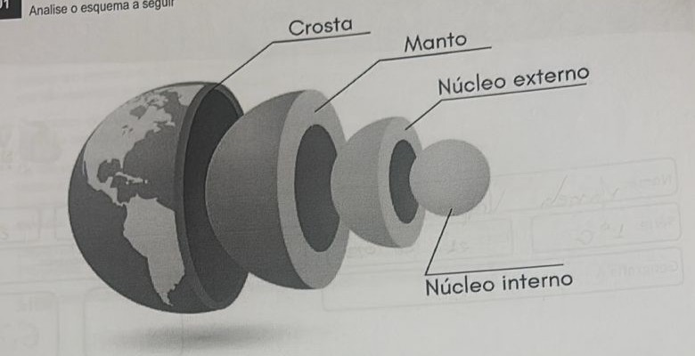
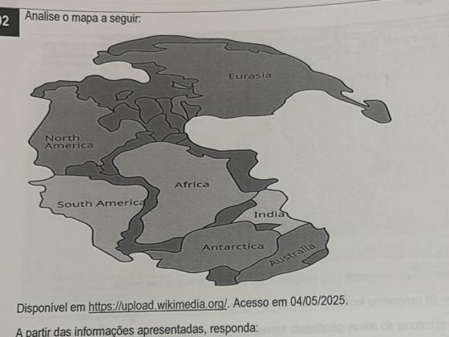
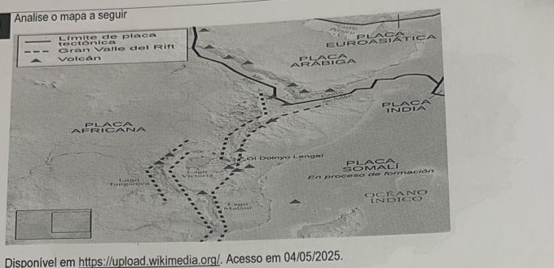
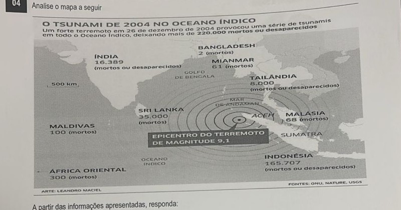
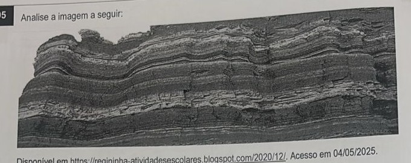
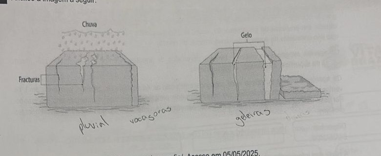

Professor: Leonardo
Analise o esquema a seguir

Disponível em https://brasilescola.uol.com.br/geografia/camadas-terra.htm. Acesso em 05/05/2025.
Considerando as informações, diferencie a composição e o estado físico do núcleo e do manto.
Analise o mapa a seguir

Disponível em https://upload.wikimedia.org/. Acesso em 04/05/2025.
A partir das informações apresentadas, responda:
a) Cite dois argumentos utilizados para embasar a Teoria da Deriva Continental, que propunha a existência de um supercontinente em períodos geológicos antigos.
b) Descreva as lacunas deixadas por essa teoria, de modo que ela não fosse inicialmente validada.
Analise o mapa a seguir

Disponível em https://upload.wikimedia.org/. Acesso em 04/05/2025.
A partir das informações apresentadas pela imagem e seus conhecimentos, responda:
a) Identifique o tipo de movimento tectônico ocorrido na região apresentada.
b) Descreva duas estruturas do relevo geralmente formadas a partir deste tipo de movimento tectônico.
Analise o mapa a seguir

Arte: Leandro Maciel. Fontes: ONU, Nature, USGS.
A partir das informações apresentadas, responda:
a) Diferencie os conceitos de maremoto e tsunami.
b) Apresente duas formas de uma sociedade reduzir os efeitos ocasionados por terremotos ou tsunamis.
Analise a imagem a seguir:

Disponível em https://regininha-atividadesescolares.blogspot.com/2020/12/. Acesso em 04/05/2025.
Identifique o tipo de rocha apresentado e descreva seu processo de formação.
Analise a imagem a seguir:

Disponível em https://www.coladaweb.com/geografia/. Acesso em 05/05/2025.
A partir da análise da imagem, descreva e classifique o processo representado.
Ao observar as diferentes paisagens do nosso planeta, podemos fazer, entre outras constatações, a verificação óbvia de que o relevo terrestre apresenta diferentes formas ao longo de sua extensão. A grande questão é: por qual razão isso ocorre? Essa dinâmica está associada ao fato de o relevo estar sempre em processo de transformação, causada principalmente por uma série de elementos naturais, que são chamados de agentes de transformação do relevo.
Os agentes exógenos do relevo — também chamados de agentes externos — são aqueles que atuam acima da superfície, modificando-a gradualmente.
Os agentes externos do relevo mais preponderantes são as águas (fluviais, pluviais, marítimas etc.), os ventos e as alterações climáticas, que ocasionam dois principais processos: o intemperismo e a erosão. Por esse motivo, esses elementos citados são, por vezes, chamados de agentes intempéricos ou agentes erosivos.
Disponível em https://mundoeducacao.uol.com.br/geografia/agentes-exogenos-relevo. Acesso em 04/05/2025.
A partir das informações apresentadas, diferencie os conceitos de intemperismo e erosão.